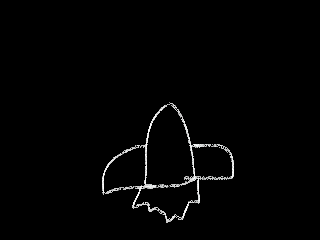
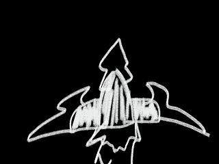
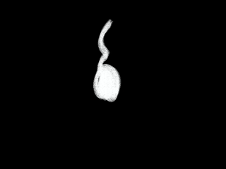
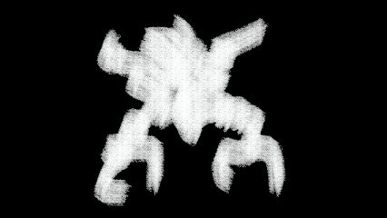

赤激战场 情人节限定



最高得分
- 1. 0
版本：1.0
开挂模式
游戏说明
你将驾驶 赤尾号 战机，在微观战场里展开一场疯狂守卫战！
无数调皮又莽撞的 精子大军 正成群结队、前赴后继地入侵而来，它们横冲直撞，目标直指你的防线核心。
游戏玩法：
- 鼠标或触摸移动控制飞机
- 自动攻击模式下，飞机会自动发射子弹
- 手动攻击模式下，点击屏幕发射子弹
- 收集道具可以增加血条
- 每通过一关可以解锁一架新飞机
- 10秒不掉血开始双倍积分，每5秒增加1倍，上限4倍
道具作用：
- 血包：拾取后增加1点生命值，提升生存能力
- 护盾：拾取后增加1点护盾值，提供额外保护
- 攻击强化：拾取后暂时提升子弹伤害，更快消灭敌人
- 速度提升：拾取后暂时增加飞机移动速度，更灵活躲避敌人
关卡说明：
- 第一关：攒到100积分过关
- 第二关：打败BOSS过关（BOSS在300积分时出现）
- 第三关：无尽模式，挑战你的极限
飞机说明：
- 初级飞机：基础机型，射速较慢，伤害较低
- 高级飞机：射速较快，伤害较高
- 终极飞机：射速最快，伤害最高
选择关卡
第一关
目标：攒到100积分
第二关
目标：打败BOSS
第三关
目标：无尽模式
关卡完成！
最终分数: 0
奖励: 解锁新飞机
击杀敌人: 0
收集道具: 0
生存时间: 0秒
游戏设置
游戏图鉴
初级飞机
升级飞机 最终飞机

普通怪 精英怪
精英怪
BOSS分数: 0
攻击模式: 自动
游戏结束
最终分数: 0